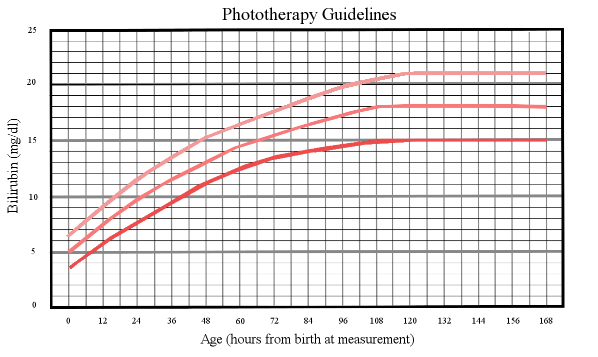
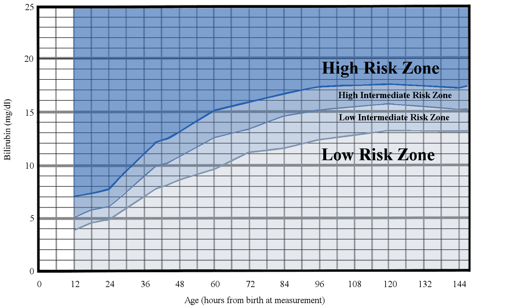
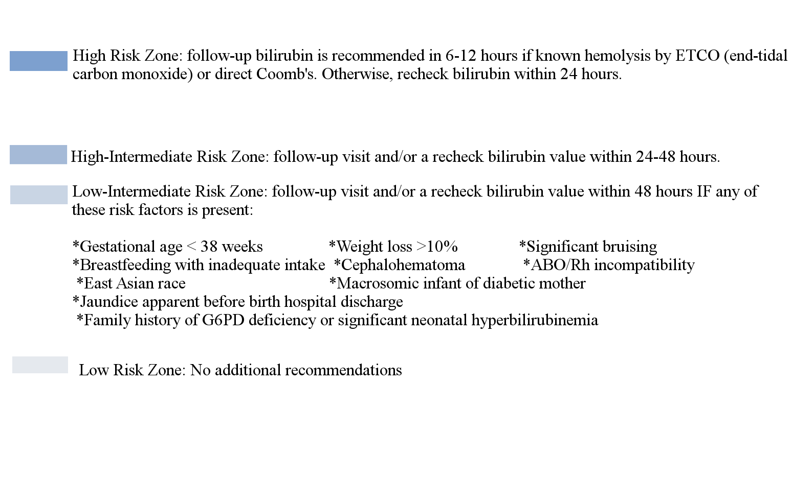

BiliCharts, (in development)
asdf
Bilirubin level:
mg/dL
Age in hours:
plus days (optional):
Risk information
35-37 weeks
38 weeks and over
Risk factors present
No risk factors present
See risk factors
Submit


